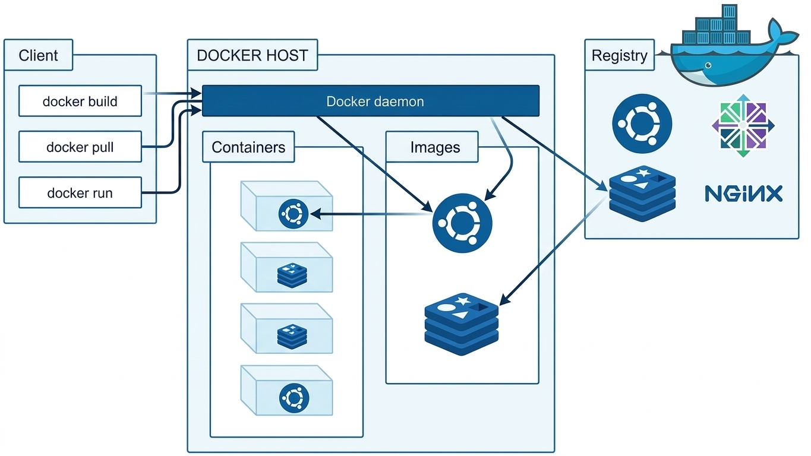
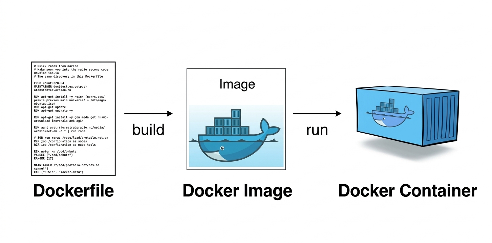
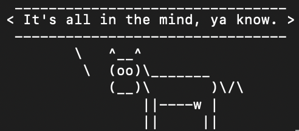
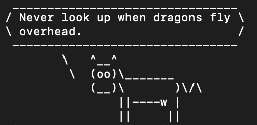

Grundlagen
Schau dir zunächst das folgende Video an, um einen ersten Überblick über Docker und die Idee der Containerisierung zu erhalten.
5 Use Cases für Docker
Zu den typischen Use Cases von Docker gehören Situationen, in denen Software mit vielen Abhängigkeiten läuft und eine Umgebung schnell und unkompliziert eingerichtet werden soll.
Jupyter Notebooks
Wenn du schon einmal versucht hast, Jupyter Notebooks mit allen Abhängigkeiten zu installieren, weißt du, dass das schnell kompliziert werden kann. Besonders bei der Einrichtung von Tools wie Anaconda kann einiges schiefgehen.
Mit Docker geht das deutlich einfacher: Du startest einfach einen Container mit einem fertigen Jupyter-Image und kannst direkt loslegen.
Jupyter Image ansehenPython-Entwicklung
Wenn du mit Python arbeitest, hast du wahrscheinlich schon einmal Versionskonflikte bei pip-Paketen erlebt. Unterschiedliche Projekte brauchen oft verschiedene Bibliotheken oder Python-Versionen, und schnell entstehen mehrere virtuelle Environments, die schwer zu überblicken sind.
Mit Docker kannst du für jedes Projekt eine eigene isolierte Umgebung erstellen. So bleiben deine pip-Abhängigkeiten sauber getrennt und deine Projekte beeinflussen sich nicht gegenseitig.
Python Image ansehenWebentwicklung
Bei der Webentwicklung musst du oft Webserver, Datenbank und Frameworks einrichten. Das kann lokal schnell kompliziert werden.
Mit Docker kannst du diese Umgebung einfach in Containern starten und deine Website lokal entwickeln und testen, ohne deinen Rechner aufwendig konfigurieren zu müssen.
Microservices
Moderne Anwendungen bestehen häufig aus vielen kleinen Services, die miteinander kommunizieren. Diese Architektur nennt man Microservices.
Docker eignet sich dafür besonders gut, weil jeder Service in einem eigenen Container laufen kann und sich dadurch einfach entwickeln und skalieren lässt.
CI/CD
Continuous Integration und Continuous Delivery beschreiben einen automatisierten Entwicklungsprozess. Dabei wird neuer Code automatisch gebaut, getestet und anschließend bereitgestellt.
Docker sorgt dafür, dass diese Schritte immer in der gleichen Umgebung stattfinden. So wird sichergestellt, dass der Code auf allen Systemen gleich funktioniert.
Architektur von Docker
Die folgende Übersicht zeigt die wichtigsten Komponenten der Docker-Architektur und wie sie zusammenarbeiten.

Docker Engine
Die Docker Engine basiert auf einer Client-Server-Architektur und besteht aus mehreren Komponenten: dem Docker Client, dem Docker Host mit dem Docker Daemon, sowie Registries, aus denen Images geladen werden können. Zusammen ermöglichen sie das Erstellen, Verwalten und Ausführen von Containern.
Docker Client
Der Docker Client ist die Schnittstelle, über die Benutzer mit Docker arbeiten. Meist erfolgt dies über die Command Line Interface (CLI).
Hier werden Befehle wie zum Beispiel eingegeben:
docker build→ erstellt ein Docker Imagedocker pull→ lädt ein Image aus einer Registry herunterdocker run→ startet einen Container aus einem Image
Der Client sendet diese Befehle über die Docker API an den Docker Daemon, der die eigentliche Arbeit übernimmt.
Docker Host
Der Docker Host ist die Maschine, auf der Docker läuft. Das kann ein physischer Computer oder eine virtuelle Maschine sein.
Auf dem Docker Host befinden sich:
- der Docker Daemon
- gespeicherte Docker Images
- laufende Container
Der Host stellt also die Umgebung bereit, in der Container ausgeführt werden.
Docker Daemon
Der Docker Daemon (dockerd) ist der zentrale Hintergrunddienst von Docker. Er läuft auf dem Docker Host und verwaltet alle Docker-Objekte.
Zu seinen Aufgaben gehören:
- Empfangen von Befehlen vom Docker Client
- Erstellen und Verwalten von Images
- Starten und Stoppen von Containern
- Kommunikation mit Docker Registries
Man kann ihn sich als Steuerzentrale von Docker vorstellen.
Docker-Objekte
Docker-Objekte sind die zentralen Bausteine einer Docker-Umgebung. Sie helfen dabei, Anwendungen zu erstellen, bereitzustellen und auszuführen. Dazu gehören Images, Container, Netzwerke und Volumes.
Im nächsten Kapitel werden die wichtigsten Docker-Objekte genauer erklärt.
Docker Registry
Eine Docker Registry ist ein zentraler Speicherort für Docker Images. Die bekannteste öffentliche Registry ist Docker Hub, auf der viele fertige Images bereitgestellt werden. Es können aber auch private Registries verwendet werden.
Typische Abläufe sind:
docker pull→ lädt ein Image aus einer Registry herunterdocker push→ lädt ein Image in eine Registry hoch
Dadurch können Images einfach verteilt und auf verschiedenen Systemen wiederverwendet werden.
Docker-Objekte
Images, Container und Volumes bilden die grundlegenden Bausteine beim Arbeiten mit Docker.
Image
Ein Docker-Image kann man sich wie einen Bauplan für ein Haus vorstellen. Der Bauplan beschreibt genau, wie das Haus gebaut werden soll, aber selbst ist er noch kein fertiges Haus.
Genauso ist ein Docker-Image keine laufende Anwendung, sondern eine Vorlage, aus der später ein Container erstellt wird.
Unveränderlichkeit
Ein wichtiger Punkt bei Docker-Images ist ihre Unveränderlichkeit. Stell dir vor, ein Architekt erstellt einen Bauplan für ein Haus. Sobald dieser Bauplan fertig ist, wird er nicht mehr verändert.
Wenn man etwas ändern möchte, zum Beispiel ein zusätzliches Zimmer, wird ein neuer Bauplan erstellt.
Aufbau aus Schichten (Layers)
Ein Docker-Image besteht nicht aus einer einzigen Datei, sondern aus mehreren Schichten, die man Layers nennt.
Auch hier hilft wieder das Bauplan-Beispiel. Beim Bau eines Hauses gibt es verschiedene Schritte, zum Beispiel:
- Fundament legen
- Wände bauen
- Dach aufsetzen
- Fenster einsetzen
Jeder dieser Schritte kann als eigene Schicht betrachtet werden. Bei Docker entsteht eine solche Schicht meist durch eine Anweisung im sogenannten Dockerfile.
Alle Schichten zusammen ergeben dann das vollständige Image.
Was enthält ein Docker-Image?
Ein Docker-Image enthält alles, was eine Anwendung benötigt, um zu laufen.
Dazu gehören zum Beispiel:
- ein Basis-Betriebssystem wie Ubuntu oder Alpine Linux
- die benötigte Laufzeitumgebung, zum Beispiel Python, Node.js oder Java
- alle erforderlichen Bibliotheken und Abhängigkeiten
- der eigentliche Anwendungscode
Dadurch kann eine Anwendung überall in derselben Umgebung ausgeführt werden, unabhängig davon, auf welchem Rechner sie gestartet wird.
Versionen und Speicherung
Damit Docker-Images organisiert werden können, gibt es sogenannte Tags und Registries.
Tags dienen dazu, verschiedene Versionen eines Images zu kennzeichnen. Images werden in sogenannten Registries (z. B. Docker Hub) gespeichert.
Von dort können Images heruntergeladen oder hochgeladen werden.
Erstellung eines Images
Der Standardweg ist ein sogenanntes Dockerfile. Dabei handelt es sich um eine Textdatei mit Anweisungen, die beschreiben, wie das Image aufgebaut werden soll.
Container
Das Image selbst ist jedoch noch nicht aktiv. Erst wenn es gestartet wird, entsteht daraus ein Container. Dieser Container ist dann die laufende Instanz der Anwendung.
Wenn ein Docker-Image der Bauplan eines Hauses ist, dann ist ein Docker-Container das tatsächlich gebaute und bewohnte Haus.
Container als Instanz eines Images
Ein Container entsteht immer aus einem Docker-Image.
Beim Haus-Beispiel bedeutet das: Ein Bauplan kann verwendet werden, um mehrere identische Häuser zu bauen. Alle Häuser basieren auf demselben Plan, aber jedes Haus existiert für sich selbst.
Bei Docker funktioniert es genauso:
- Aus einem Image können beliebig viele Container gestartet werden.
- Jeder Container ist eine eigene laufende Instanz.
Ein wichtiger Unterschied ist der Zustand. Während der Bauplan immer gleich bleibt, verändert sich das Haus im Alltag. Möbel werden umgestellt, Dinge werden benutzt oder neu hinzugefügt.
Beschreibbare Schicht
Zusätzlich erhält er jedoch eine eigene beschreibbare Schicht:
- Änderungen im Container werden nur im Container selbst gespeichert.
- Das Image bleibt unverändert.
- Andere Container werden nicht beeinflusst.
Ressourcen und Effizienz
Alle Container teilen sich den Kernel des Host-Betriebssystems.
Dadurch haben Container mehrere Vorteile:
- Sie starten sehr schnell.
- Sie benötigen weniger Arbeitsspeicher.
- Sie verbrauchen nur Ressourcen, wenn sie tatsächlich laufen.
Isolation und Sicherheit
Ein Container läuft in einer isolierten Umgebung:
- Anwendungen laufen isoliert voneinander.
- Container beeinflussen sich nicht gegenseitig.
- Sie greifen nicht direkt auf das Host-System zu.
Das sorgt für mehr Sicherheit und Stabilität.
Lebenszyklus
Container können während ihrer Nutzung jederzeit verwaltet und gesteuert werden. Da ein Container immer aus einem Docker-Image entsteht, kann bei Bedarf jederzeit ein neuer Container aus derselben Vorlage erstellt werden.
Typische Aktionen sind beispielsweise das Starten, Stoppen oder Pausieren eines Containers.
Außerdem können Container jederzeit gelöscht und bei Bedarf erneut aus dem ursprünglichen Image erstellt werden.
Spickzettel
| Docker-Image | Docker-Container | |
|---|---|---|
| Was ist es? | Vorlage / Bauplan | Laufende Instanz |
| Erstellt von | Dockerfile | Image |
| Zusammensetzung | Nur schreibgeschützte Schichten | Schreibgeschützte + eine beschreibbare Schicht |
| Veränderlichkeit | Unveränderlich | Veränderlich |
Volume
Ein Docker-Volume ist eine Möglichkeit, Daten dauerhaft zu speichern. Während Container jederzeit gelöscht oder neu erstellt werden können, bleiben die Daten im Volume erhalten. Dadurch können Anwendungen wie Datenbanken oder Webserver ihre Daten sicher speichern, unabhängig vom Lebenszyklus des Containers.
1. Das Problem
Wird ein Container gelöscht, verschwindet auch seine beschreibbare Schicht und damit alle darin gespeicherten Daten.
Beispiel:
Wenn in einem Container eine Datenbank läuft und der Container gelöscht wird, gehen auch alle Daten der Datenbank verloren.
2. Die Lösung: Docker Volumes
Ein Docker-Volume speichert Daten außerhalb des Containers auf dem Host-Rechner.
Man kann sich ein Volume wie einen externen Speicherordner vorstellen, der mit dem Container verbunden wird.
Der Container kann dort Daten lesen oder speichern, aber die Daten gehören nicht direkt zum Container.
Vorteil: Wenn der Container gelöscht wird, bleiben die Daten im Volume weiterhin erhalten.
3. Wichtige Anwendungsfälle
-
Datenbanken
Damit Daten von MySQL oder PostgreSQL erhalten bleiben, auch wenn der Container neu gestartet oder ersetzt wird. -
Datenaustausch
Mehrere Container können auf dasselbe Volume zugreifen und Daten miteinander teilen.
Befehle entdecken
Da nun die Grundlagen kennengelernt wurden, schauen wir uns im nächsten Schritt die Docker-Befehle an. In diesem Quiz soll selbst überlegt werden, welcher Befehl in der jeweiligen Situation verwendet wird. Falls Unsicherheit besteht oder mehr Informationen benötigt werden, kann jederzeit auf das Fragezeichen unten rechts geklickt werden.
Setup & Dockerfile
Docker installieren
Installiere zunächst Docker auf deinem Gerät. Hier findest du die Installationsanweisungen aus der Docker-Dokumentation:
- Mac: Docker für Mac installieren
- Windows: Docker für Windows installieren
- Linux: Docker für Linux installieren
Überprüfe nun deine Docker Version im Terminal:
docker --versionEigenes Docker-Image mit Dockerfile erstellen

Das Dockerfile beschreibt, wie ein Image Schritt für Schritt erstellt wird.
Verzeichnis für das Image erstellen
Zunächst wird ein neues Verzeichnis angelegt, in dem die Dateien für das Image gespeichert werden.
mkdir wise-cow
cd wise-cowDockerfile erstellen
Im nächsten Schritt wird eine neue Datei mit dem Namen Dockerfile erstellt. Diese Datei enthält die Anweisungen, mit denen Docker später das Image erzeugt.
touch Dockerfile
Prüfen, ob die Datei im Ordner vorhanden ist:
lsAls Ausgabe sollte nun Dockerfile erscheinen.
Inhalt des Dockerfiles definieren
Dockerfile zum Bearbeiten öffnen:
nano DockerfileIn das Dockerfile werden folgende Zeilen eingefügt:
FROM ubuntu:22.04
RUN apt update && apt install -y fortune cowsay
CMD ["sh", "-c", "/usr/games/fortune -a | /usr/games/cowsay"]Erklärung der einzelnen Anweisungen
fortune und cowsay installiert.
fortune einen Spruch, der über eine Pipe an
cowsay weitergegeben wird.
Dockerfile speichern
Im nano-Editor:
Inhalt überprüfen:
cat DockerfileImage erstellen
Nachdem das Dockerfile erstellt wurde, kann daraus ein Docker-Image gebaut werden.
docker build -t wise-cow .Dieser Befehl erstellt ein neues Image mit dem Namen wise-cow.
Überprüfen, ob das Image erstellt wurde
Folgender Befehl zeigt alle vorhandenen Images:
docker imagesIn der Liste sollte nun das Image wise-cow erscheinen.
Container aus dem Image starten
Zum Schluss kann ein Container gestartet werden:
docker run wise-cowBeim Start wird ein zufälliger Spruch erzeugt und von der Kuh im Terminal ausgegeben:


Zentrale Befehle
Die folgenden Befehle gehören zu den wichtigsten Grundlagen und werden im Alltag sehr häufig verwendet.
Erstellen
Ein Image aus dem Dockerfile im aktuellen Verzeichnis erstellen und das Image mit einem Tag versehen
docker build -t firstdocker:1.0 .Alle Images auflisten, die lokal im Cache gespeichert sind
docker image lsEin Image aus dem lokalen Image Cache löschen
docker rm docker/whalesay:latestVeröffentlichen
Ein Image aus einer Registry laden
docker pull docker/whalesay:latestEin lokales Image für das Hochladen auf eine Registry umtaggen
docker tag docker/whalesay:latest my.registry.de/whalesay:1.0In eine eigene Registry einloggen
docker login my.registry.de:8000Ein Image in eine Registry hochladen
docker push my.registry.de/whalesay:1.0Ausführen
Container starten
docker run # Startet einen neuen Container
--rm # Container automatisch löschen, wenn er beendet wird
-it # Interaktives Terminal öffnen
--name dummiescontainer # Container einen Namen geben
-p 8080:80 # Port 8080 des Hosts auf Port 80 im Container weiterleiten
-v ~/dev:/code # Ordner vom Host in den Container einbinden (Volume)
docker/whalesay # Image, aus dem der Container erstellt wird
/bin/sh # Befehl, der im Container ausgeführt wirdEinen laufenden Container beenden
docker stop whalesayEinen laufenden Container hart beenden (den Prozess entfernen)
docker kill whalesayEin Overlay-Netzwerk erstellen und ein Subnetz angeben
docker network create --subnet 10.1.0.0/24 --gateway 10.1.0.1 -d overlay dummiesnetzNetzwerke auflisten
docker network lsDie gerade laufenden Container auflisten
docker psAlle Container auflisten
docker ps -aAlle laufenden und beendeten Container löschen
docker rm -f $(docker ps -aq)Einen neuen Bash-Prozess innerhalb des Containers erzeugen und mit dem Terminal verbinden
docker exec -it whalesay bashDie letzten 100 Zeilen des Logs eines Containers ausgeben
docker logs --tail 100 whalesayHäufige Fehler
Beim Arbeiten mit Docker treten häufig ähnliche Fehlermeldungen auf. Die folgenden Beispiele zeigen typische Probleme und erklären kurz, warum sie entstehen.
port is already allocated
Beim Starten eines Containers kann folgende Fehlermeldung auftreten:
Error response from daemon: driver failed programming external connectivity
on endpoint <name> Bind for 0.0.0.0:8080 failed: port is already allocated.Der gewünschte Port des Docker-Hosts ist bereits durch einen anderen Container belegt. Das Port-Mapping muss angepasst werden, sodass ein anderer Port verwendet wird.
repository does not exist or may require 'docker login'
Beim Herunterladen eines Images kann folgende Meldung erscheinen:
Error response from daemon: pull access denied for <name>, repository does
not exist or may require 'docker login'.Entweder existiert das Image nicht (z.B. Tippfehler im Namen) oder es ist nicht öffentlich verfügbar. In diesem Fall kann eine Anmeldung mit docker login erforderlich sein.
container name is already in use
Ein weiterer häufiger Fehler tritt auf, wenn der Name eines Containers bereits vergeben ist. Beim Erstellen oder Umbenennen eines Containers erscheint dann folgende Fehlermeldung:
Conflict. The container name <name> is already in use by container <id>.
You have to remove (or rename) that container to be able to reuse that name.Der Name eines Containers ist bereits vergeben. Der neue Container muss anders benannt oder der vorhandene Container umbenannt bzw. gelöscht werden.
No space left
Beim Pull eines Images kann folgende Fehlermeldung auftreten, wenn auf dem System kein freier Speicherplatz mehr vorhanden ist:
No space left on device in default machineAuf der Docker-Maschine ist kein Speicherplatz mehr verfügbar. Häufig liegt das daran, dass die virtuelle Festplatte der Docker-VM voll ist. Nicht mehr benötigte Images können gelöscht oder die virtuelle Festplatte vergrößert werden.
You cannot remove a running container
Beim Versuch, einen Container zu löschen, kann gelegentlich folgende Fehlermeldung erscheinen:
You cannot remove a running container <id>. Stop the container before
attempting removal or force removeEin laufender Container kann nicht direkt gelöscht werden. Der Container muss zuerst mit docker container stop gestoppt werden oder das Löschen kann mit dem -f-Flag erzwungen werden.
unable to remove repository reference
Beim Aufräumen von Images kann folgende Fehlermeldung auftreten. In diesem Fall müssen zunächst die zugehörigen Container entfernt werden:
unable to remove repository reference <name> (must force) - container <id>
is using its referenced image <id>Das Image wird noch von einem Container verwendet. Der Container muss zuerst gelöscht werden, bevor das Image entfernt werden kann.
Multiple IDs found
Wenn Container über die Anfangszeichen der ID oder des Digest referenziert werden, kann folgende Meldung erscheinen:
Multiple IDs found with provided prefix: <id>Das angegebene Präfix einer Container-ID ist nicht eindeutig. Es müssen mehr Zeichen der ID angegeben werden, damit Docker den Container eindeutig identifizieren kann.
no matching manifest
Etwas weniger offensichtlich als einige der vorherigen Meldungen ist der folgende Fehler:
no matching manifest for unknown in the manifest list entries.Dieser Fehler tritt häufig auf, wenn versucht wird, einen Windows-Container auf einem Linux-System oder einen Linux-Container auf einem System mit aktivierten Windows-Containern zu starten.
driver failed programming external connectivity
Auch der folgende Fehler gehört zu den weniger offensichtlichen und kann gelegentlich auftreten:
driver failed programming external connectivity on endpoint <name>
(<id>): Error starting userland proxy: mkdir /port/tcp:0.0.0.0:<host-port>:
tcp:<container ip>:<container port>: input/output error.Dieser Fehler tritt unter Windows gelegentlich auf und hängt häufig mit Netzwerkänderungen oder Problemen mit dem virtuellen Switch von Hyper-V zusammen. Ein Neustart von Docker Desktop kann das Problem beheben.